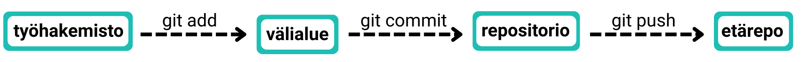

Git käyttää hajautettua työnkulkua, joka mahdollistaa koodin muokkaamisen,
muutosten lisäämisen välialueelle (stage) ja niiden committaamisen
paikalliseen repositorioon ennen niiden lisäämistä etärepositorioon.
Tämän työnkulun ymmärtäminen on tärkeää onnistuneen versionhallinnan
kannalta.

Git työnkulun kaavio
Vinkki! Painamalla kuvaa pohjassa, se aukeaa suuremmaksi. Tämä toimii
kaikissa oppaan kuvissa.
Työnkulku koostuu seuraavista vaiheista:
Työhakemisto (Working Directory)
Tämä on kansio, jossa työskentelet Git-projektin kanssa.
Se syntyy, kun alustat kansion komennolla git init tai
kloonaat sen etävarastosta komennolla git clone
Git seuraa tässä kansiossa tehtyjä muutoksia ja kertoo tilanteen
komennolla
git status
Git Add ja Välialue (Staging Area)
Välialue toimii “odotusalueena”, johon kerätään commit-pakettiin
otettavat muutokset.
Yksittäinen tiedosto lisätään välialueelle komennolla
git add tiedosto.txt
Kaikki muutokset puolestaan lisätään komennolla git add .
Commit-pakettiin lisättyjen tiedostojen tilanne selviää komennolla
git status
Git Commit ja Paikallinen repositorio (Repository)
Kun haluamasi muutokset ovat välialueella, tee commit komennolla
git commit -m "kuvaava viesti"
Tämä tallentaa välialueella olleet muutokset pysyvästi paikalliseen
repositorioon.
Hyvän commit-viestin tulisi olla lyhyt mutta kuvaava, esimerkiksi
"fixed bug X" tai "added feature Y".
Git Push ja Etärepositorio (Remote Repository, esim GitHub).
Commitit tallentuvat aluksi vain paikallisesti omalle koneellesi.
Jotta muutokset tallentuvat GitHubiin, lähetä ne komennolla
git push -u origin <haaran-nimi>.
Kun muutoksien lähettämiseen on kerran käytetty git push -komennon
lippua -u (tai --set-upstream), joka asettaa
paikallisen haaran seuraamaan vastaavaa etähaaraa voi jatkossa käyttää
lyhyempää komentoa git push.
Git Pull
Jos työskentelet tiimissä, on tärkeää säännöllisesti hakea
etärepositoriosta uusimmat muutokset komennolla git pull.
Tämä komento hakee ja yhdistää muutokset siitä etähaarasta, joka
vastaa paikallista haaraa jossa olet tällä hetkellä. Toimii vain, kun
git on aikaisemmin asetettu seuraamaan (push -u) kyseistä
etärepositorion haaraa.
Jos haluat hakea muutokset jostain toisesta haarasta, voit käyttää
komentoa git pull origin haaran-nimi.
Tämä varmistaa, että paikallinen repositoriosi on ajan tasalla ja
auttaa välttämään yhdistämiskonflikteja (merge conflict).
Ymmärtämällä ja noudattamalla tätä työnkulkua voit hallita koodimuutoksia
järjestelmällisesti ja tehdä yhteistyötä muiden kehittäjien kanssa
sujuvasti.
Huom! Gitin perus workflowt löytyy myös sivupalkin muistilistasta! Voit aina
tarkistaa seuraavan vaiheen
sieltä.